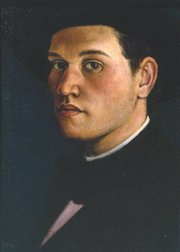
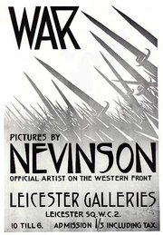

Christopher R.W. Nevinson
From The Giant: The Definitive Obey Giant Site
|  |
{kind=link}
From Osborne Samuel:
British Painter of landscapes, urban and industrial subjects, war scenes, figure studies and flower paintings; an accomplished etcher and lithographer who worked in a variety of styles. He attended St John's Wood School of Art 1907-8, the Slade School 1908-12 and the Academie Julian, Paris, 1912-13, where he shared a studio with Modigliani, worked at the Cercle Russe and made friends with Severini. Interested in Cubism and Futurism, he was one of the first English artists to be deeply influenced by new developments in Europe at that time; his work was included in the Post-Impressionists and Futurists exhibition at the Dore Gallery in 1913, and he organized a banquet for the Futurist leader Marinetti in London in that year. A founder member of the London Group, and active in the Rebel Art Centre, he wrote, with Marinetti, `Vital English Art: A Futurist Manifesto', published in the Observer in 1914; he also contributed to the second issue of Blast. In 1915 he joined the RAMC, and was made an Official War Artist in 1917; he was the first artist to draw from the air. He tried to sum up the anonymity of the individual in Column on the March, 1915, the destructiveness of war in The Road From Arras to Bapaume, 1918, and its horror in Paths of Glory, which was censored and earned him a reprimand from the War Office. His prints, with their bold contrasts and jagged forms marked a complete break with the Whistler tradition. In 1919 and 1920 he visited New York, and his emotional response inspired work such as The Soul of A Soulless City, 1920. He was elected to the NEAC in 1929, the RBA in 1932 and as ARA in 1939. His later landscape and flower pieces were gentler and less radical in design than his work before 1925.
A work by Nevinson, assumed to be a promotional poster for a gallery show, served as the inspiration for Shepard Fairey's 2006 work Bayonettes.
|  |
{kind=link}
{kind=link}